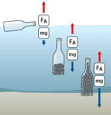

Закон Архімеда Силу, яка виштовхує тіло з рідини або газу, називають архімедовою силою на честь давньогрецького вченого Архімеда, який вперше розрахував її значення.
Дослід. Підвісимо до пружини невелике відерце і тіло циліндричної форми. Розтягування пружини відзначимо стрілкою на штативі , вона показує вагу тіла в повітрі. Підставимо посудину, наповнену рідиною до рівня відливної трубки і помістимо у нього циліндр. Після занурення циліндра в рідину, частина рідини, об'єм якої дорівнює об'єму тіла, виливається з відливної посудини у склянку. Покажчик пружини піднімається вгору, пружина скорочується, показуючи зменшення ваги тіла в рідини . На циліндр, одночасно з силою тяжіння, діє ще й сила, що виштовхує його з рідини. Якщо у відерце вилити рідину зі склянки, тобто ту, яку витіснило тіло, то покажчик пружини повернеться до свого початкового стану .